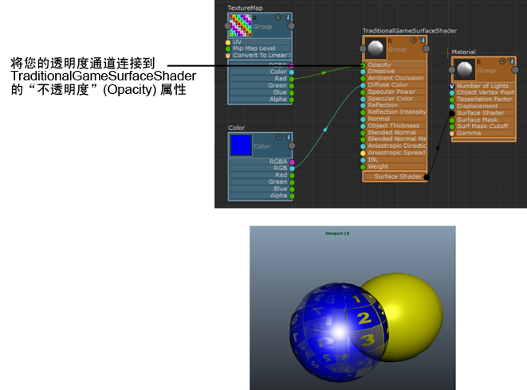

在“ShaderFX”编辑器中，将透明度值连接到“TraditionalGameSurfaceShader”着色器的“不透明度”(Opacity)属性。
提示： 若要防止透明对象阻止渲染其后的对象，请选择“材质”(Material)节点，然后在“属性编辑器”(Attribute Editor)中，禁用“深度写入”(Depth Write)。
若要防止对象进行双面渲染，您可以选择对象的形状节点，然后在“属性编辑器”(Attribute Editor)中的“渲染统计信息”(Render Stats)部分中禁用“双面”(Double Sided)。
为获得最佳透明度质量，请选择“渲染器 > Viewport 2.0”(Renderer > Viewport 2.0) >  ，然后选择“深度剥离”(Depth Peeling) “透明度算法”(Transparency Algorithm)。但是，此选项牺牲性能来提供高质量。
，然后选择“深度剥离”(Depth Peeling) “透明度算法”(Transparency Algorithm)。但是，此选项牺牲性能来提供高质量。
